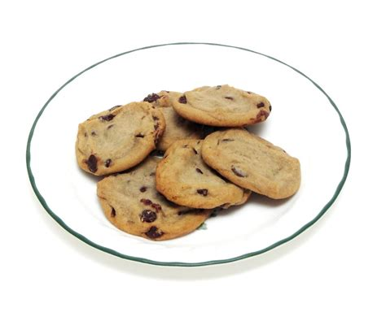

Time to cook:
30 min
Amount of porti:
4
Kal:
927Kal

Ingredients
- mandarin - 150g
- Sahar - 150g
- Egg (cooked) - 2 of them
- Pschehinaja muka - 220g
- Hlopja - 220g
- ?? - 1/2 ???
- sol - nemnoschka
- wilenaja ??? - 80g
Instruction
- Wsbit Rasmachtschenij margarin c saharom do belecowo zweta
- Dobawit jeiza i peremeschat do odnorodnowa sostajanije
- Bsipat muku rasrihlitel i sol peremeschat
- Dobawit obsonaje hlopja i klukwu samesit odnorodnoje testa nakrit pljönkoi i ubrat w holodilnik na 15 minut
- is testa skatat schariki wiloschit ih na protiwen pokriti pekarsjoi bumagai s lechka prepalasnut ih ladonu. otpawit w duhofku pasogret do 180 gradusow na 15 minut